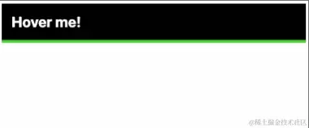

我们实际上可以使用一个简单的技巧，就是用一个网格项制作一个 CSS 网格。
然后真正要做的就是把我们的grid-template-rows从0fr过渡到1fr。这样我们的网格项将从 0 过渡到它的“自然”高度。
.accordion-body {
display: grid;
grid-template-rows: 0fr;
transition: 250ms grid-template-rows ease;
}
.accordion:hover .accordion-body {
grid-template-rows: 1fr;
}
.accordion-body > div {
overflow: hidden;
}
